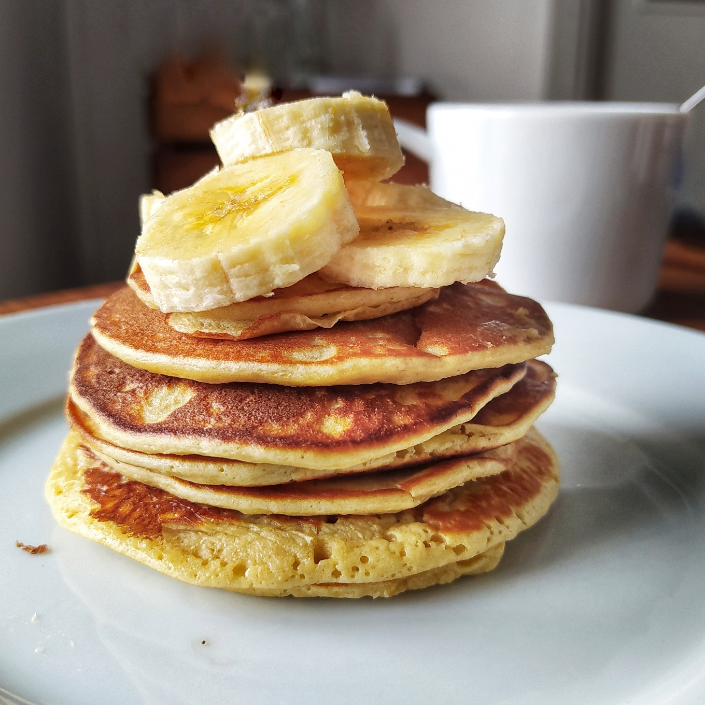

Pancakes de avena y plátano

Los pancakes de avena y plátano son una alternativa sencilla a los pancakes tradicionales. El plátano aporta dulzor natural, mientras que la avena proporciona carbohidratos y fibra. Además, el huevo y la leche ayudan a aumentar el contenido de proteína, convirtiéndolos en una opción interesante para un desayuno antes o después del entrenamiento.